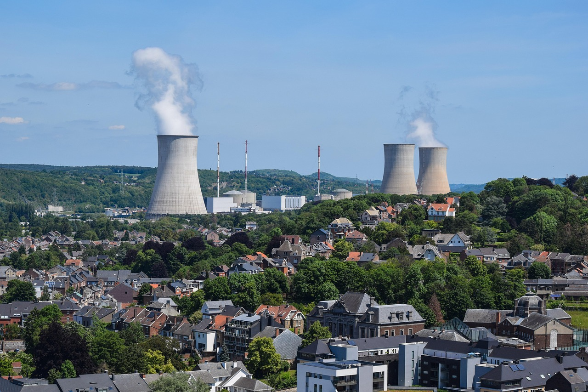

원자력연구원, 요르단 원자로에 NTD 기술 첫 수출

한국원자력연구원이 요르단 연구용 원자로(JRTR)에 반도체급 실리콘 잉곳 생산에 활용되는 중성자 전환 도핑(NTD, Neutron Transmutation Doping) 시설을 구축하는 데 성공했다. 이번 성과는 한국의 원자력 기술이 반도체 소재 생산 분야에서 최초로 해외 수출된 사례로, 원전 기술 다각화의 새 이정표로 평가받는다.
NTD 기술은 중성자를 실리콘 잉곳에 쬐어 균일하게 인(P) 원소를 도핑하는 공정으로, 전력 반도체의 핵심인 고순도 N형 실리콘을 만드는 데 필수적이다. 일반 화학적 도핑 방식보다 도핑 균일도가 월등히 높아 전력 손실이 적은 고성능 소자 제작이 가능하다.
한국원자력연구원에 따르면 이번 요르단 프로젝트를 통해 연간 최대 수십 톤 규모의 NTD 실리콘 잉곳 생산이 가능한 설비가 완성됐다. 현재 NTD 방식의 실리콘 잉곳은 글로벌 시장에서 kg당 100달러 이상의 프리미엄이 붙어 거래되며, 전력 반도체 수요 급증과 함께 공급 부족 현상이 가속화되고 있다.
요르단 원자력위원회(JAEC) 관계자는 '한국의 NTD 기술 이전을 통해 요르단이 첨단 반도체 소재 생산국으로 도약하는 발판을 마련했다'고 밝혔다. 요르단은 이번 시설을 활용해 중동 지역 전력 반도체 소재 허브로 성장한다는 비전을 제시하고 있다.
국내 반도체 업계에서는 이번 수출이 단순 기술 이전을 넘어 한국이 주도하는 NTD 실리콘 공급망 구축의 서막이 될 수 있다고 평가한다. 원자력연구원은 향후 동남아, 중동, 동유럽 지역 연구로에도 NTD 시설 수출을 타진하고 있는 것으로 알려졌다.
전 세계 NTD 실리콘 공급은 현재 네덜란드·독일·체코 등 일부 유럽 국가 원자로와 미국 일부 시설이 과점하고 있다. 전력 반도체 수요가 급증하는 가운데 공급 다변화 필요성이 높아지고 있어, 한국의 기술 수출은 글로벌 공급망 재편에도 기여할 수 있다.
국내 전력 반도체 소재 기업들은 NTD 실리콘 확보 경쟁이 심화되는 상황에서 국내 연구로를 활용한 자체 생산 확대 방안도 논의 중이다. 한국원자력연구원 부설 하나로 연구로의 NTD 서비스 생산 능력 증대 투자가 검토되고 있다는 소식도 전해진다.
관련 정책 측면에서 산업통상자원부는 원자력 기술의 산업 연계를 확대하는 '원자력 산업 활용 다각화 로드맵'을 연내 수립할 예정이다. 여기에는 NTD 실리콘 생산을 포함한 원자력 기반 소재 사업화 방안이 포함될 것으로 알려졌다.
전문가들은 '전기차와 AI 서버의 급속한 보급으로 전력 반도체 수요가 향후 5년간 연평균 15% 이상 성장할 것'이라며 'NTD 실리콘 수급 안정화가 국내 전력 반도체 생태계의 경쟁력을 좌우할 핵심 변수가 될 것'이라고 강조했다.
이번 기술 수출은 한-요르단 원자력 협력협정을 기반으로 추진됐으며, 계약 규모는 수백억 원대로 추산된다. 원자력연구원은 시설 구축 후에도 운영 기술 지원 및 인력 교육 등 장기 협력을 지속할 계획이다.
국내 투자자들 사이에서는 NTD 실리콘 수요 성장과 한국의 기술 경쟁력이 맞물리면서 원자력 기반 반도체 소재 관련 기업들에 대한 관심이 높아지고 있다. 원자력 기술과 반도체 소재를 연계한 신사업 모델이 새로운 투자 테마로 부상할 수 있다는 분석도 나온다.
향후 전망과 관련해 원자력연구원 관계자는 '요르단 수출 성공이 레퍼런스가 돼 추가 수출 협상에서 유리한 고지를 점할 수 있을 것'이라며 'NTD 기술의 글로벌 표준화를 주도하겠다는 목표를 갖고 있다'고 밝혔다.